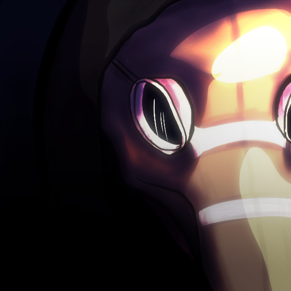
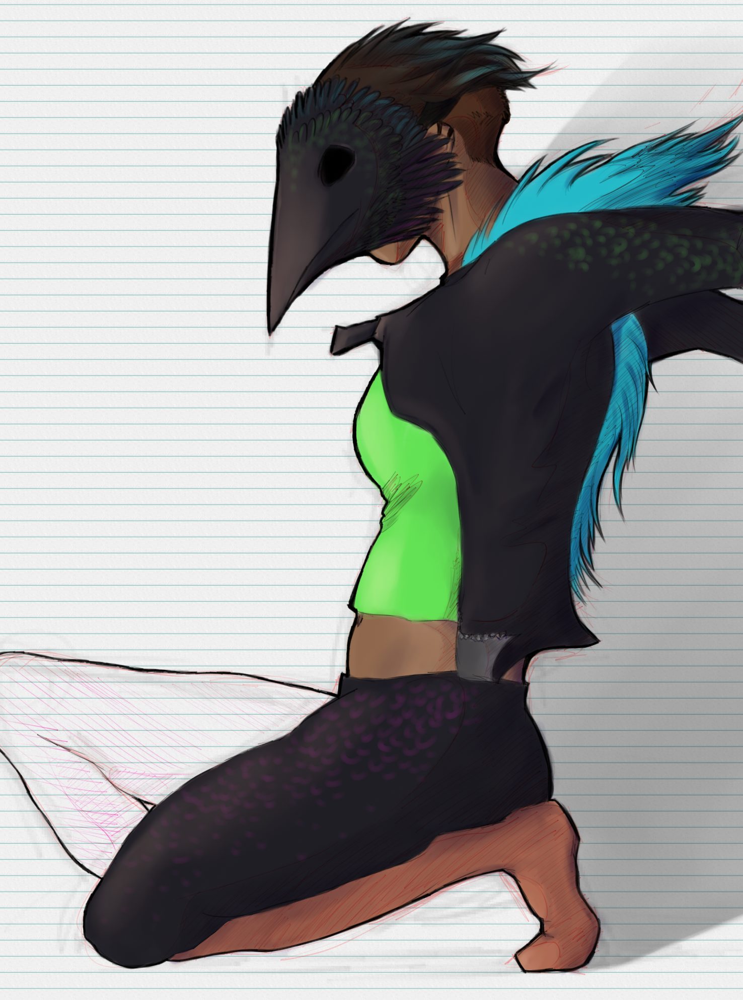
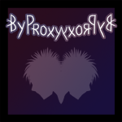

personal projects
Since 2009, I have been working on a string of projects that quench my need to respire creativity. As a self-proclaimed jack of all trades, I have found that it is my duty to spread out the use of multiple media, including written words, screenplays, comics, and animations. Although I have not thoroughly expanded any of these projects thus far, I hope to do so for at least one of them in the near future.
TAOFAO
The Adventures of Flufferson and Oliver, or TAOFAO or short, started as an innocent collaborative doodle between two best friends. I co-founded TAOFAO with Carrington Kaiser somewhere around 2009/2010, desperate to expand my characters’ universes and possibilities. The comedy series follows Oliver, a dude, and Flufferson, a dog-dragon. My chosen medium for this project is 2D animation, as I already have one episode under my belt. This (poorly-done within one high-school spring break of a week) episode, “Glass Walls,” can be seen here on YouTube. I have also written a short story set in the TAOFAO universe, but it’s terrible. I hope to further develop this universe in the future with some renovations on story and art style.
UWWGTB Universe
The UWWGTB Universe (ehem, working title) contains most of my other projects, which are mainly dramas and/or thrillers. It started with a short story named after the We Came As Romans song, Understanding What We’ve Grown to Be. I have recently made an effort to connect all these through a “multiverse” theme.
UWWGTB (2011)
Understanding What We’ve Grown to Be was originally planned to be a short story completely inspired by song lyrics, hence the title. It focuses on two best friends as they realize things that have come and gone in their lives, the dilemma of light versus dark, and coming to find who they have grown to be. Rarely ever do I finish things, so I think it’s safe to say I only ever wrote the outline for this one.
Anti-Angel (2013-)
My experimental comic, Anti-Angel, is the latest addition to my multiverse, having been started in early 2013 after countless hours of bingeing Batman Begins and Batman cartoons. There are two different versions of this comic: The first version, available on my deviantArt, and the new version I am currently constructing. I have completely redone the story and believe it is much better than the first version. The new version is significantly less experimental, which means I am taking my time planning out every plot point, script, and page.
Forever Falls (working title), the new rendition of this “superhero” graphic novel, follows a young woman living in Chicago who discovers a stripped-down relic of a hero she once called her savior. Alcyone soon finds herself questioning her morals, mind, and ultimately fate as she joins a fallen hero in the battle against crime.
Proxy (2011-)
First conceived in the summer of 2011 and put to rest until recently in the spring of 2014, By Proxy is a television series script mainly based on the thrills of psychological abnormalities. Siblings Carter and Jacqueline Bonham explore their childhood streets of Gary, Indiana as they unfold the dark truths about who they really are. This is intended to be mildly realistic in its psychological thriller properties but also out-of-this-world with a flair of science fiction/fantasy. Since I recently remodeled this project, I have completed one Pilot script; however, it was terrible and too short, and I plan on starting from scratch once again in the near future.